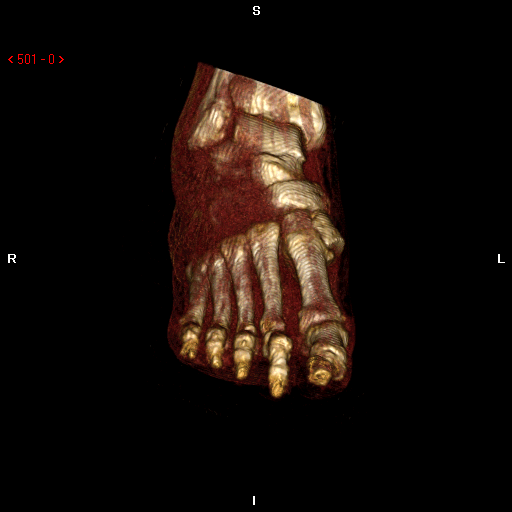
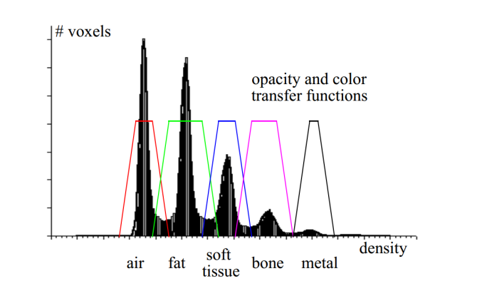
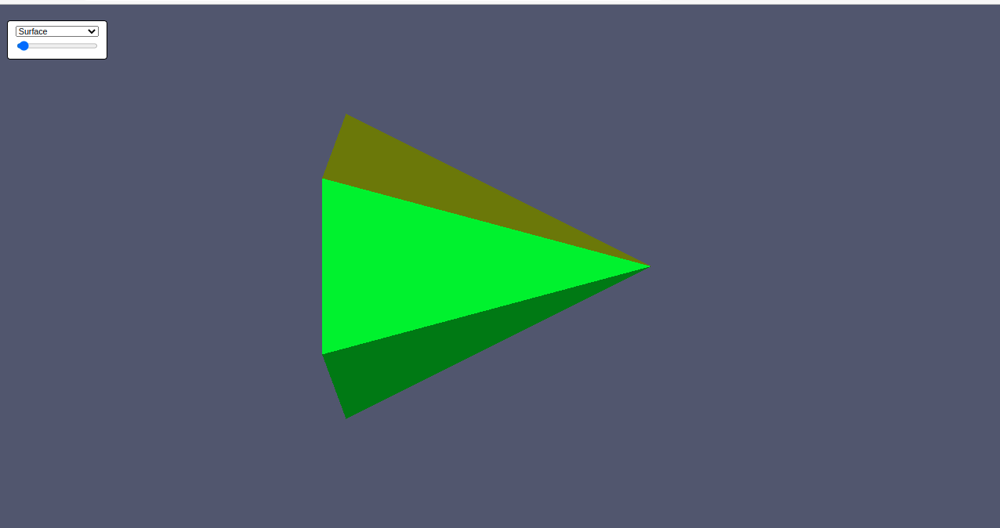

class: center, middle # Volume Rendering using VTK ### Instructed by: Eslam Adel #### eslam.a.mahmoud@eng1.cu.edu.eg --- # Volume Rendering * What is volume rendering ? -- * The process of visualization of 3D data by displaying it as a 3D object. -- * What data? -- * Medical images -- * Each 2D image represent a scan of a slice of human body -- * Arranging all images together is a 3D volume and visualize it as a 3D object. --- ## Volume Rendering Cont, **Objective: ** to create a 3D object like that from series of 2D images <center>  </center> --- ## Computer Graphics & Volume Rendering -- How to use CG to visualize 3D volume ? -- * **Ray casting** for direct volume rendering **(DVR)** -- * **Surface extraction** for indirect volume rendering **(IVR)** -- * **Transformations** to manipulate the Volume -- * **Projection** to project the volume onto a 2D image -- * **Camera** to define the view of the volume --- ## Volume coloring in DVR -- Assign different colors for different types of tissues through Through the use of color **transfer function** -- **Basic Idea: ** map different ranges of intensities to different colors, Where each range represent a different tissue. <center>  </center> --- class: middle, center # Visualization Toolkit (VTK) --- ## VTK * Open source, object oriented software system for computer graphics and visualization * It is available in many programming languages like C++, java, Python, etc. ### VTK.js <center> </center> * a rewrite of C++ VTK, for the web * follows the core VTK architecture paradigm * based on WebGL and other web technologies <center> <img src="../../images/webGL.png" width="25%"> </center> --- ## VTK.js Project Creation * Requirements: * Install node-js and npm from [this link](https://nodejs.org/en/) * Following [this page](https://kitware.github.io/vtk-js/docs/vtk_vanilla.html) * Initialize the project Create new folder for the project then run ```shell npm init ``` * Install the dependencies ```shell npm install @kitware/vtk.js npm install -D webpack-cli webpack webpack-dev-server ``` --- ## VTK.js Project Creation Cont, * Create two folders under the project folder: * `src` for the source code * `dist` final bundled code * Create `index.html` in the `dist` folder ```html <!doctype html> <html> <head> <meta charset="utf-8" /> </head> <body> <script src="./main.js"></script> </body> </html> ``` * Edit the `scripts` section in `package.json` file to be: ```json "scripts": { "build": "webpack --progress --mode=development", "start": "webpack serve --progress --mode=development --static=dist", "test": "echo \"Error: no test specified\" && exit 1" } ``` --- ## VTK.js Project Creation Cont, * Create `index.js` file in the `src` folder and add cone example code from [this link](https://kitware.github.io/vtk-js/docs/vtk_vanilla.html#Using-vtk-js-in-your-app) * Run the app ```shell npm run start ``` * Open [http://localhost:8080]() in your browser <center>  </center> --- ## Understanding the example * Import VTk.js ```javascript import '@kitware/vtk.js/Rendering/Profiles/Geometry'; import vtkFullScreenRenderWindow from '@kitware/vtk.js/Rendering/Misc/FullScreenRenderWindow'; import vtkActor from '@kitware/vtk.js/Rendering/Core/Actor'; import vtkMapper from '@kitware/vtk.js/Rendering/Core/Mapper'; import vtkCalculator from '@kitware/vtk.js/Filters/General/Calculator'; import vtkConeSource from '@kitware/vtk.js/Filters/Sources/ConeSource'; import { AttributeTypes } from '@kitware/vtk.js/Common/DataModel/DataSetAttributes/Constants'; import { FieldDataTypes } from '@kitware/vtk.js/Common/DataModel/DataSet/Constants'; ``` --- * Add the UI component for controlling the app ```javascript const controlPanel = ` <table> <tr> <td> <select class="representations" style="width: 100%"> <option value="0">Points</option> <option value="1">Wireframe</option> <option value="2" selected>Surface</option> </select> </td> </tr> <tr> <td> <input class="resolution" type="range" min="4" max="80" value="6" /> </td> </tr> </table> `; ``` * This will add the following <table> <tr> <td> <select class="representations" style="width: 100%"> <option value="0">Points</option> <option value="1">Wireframe</option> <option value="2" selected>Surface</option> </select> </td> </tr> <tr> <td> <input class="resolution" type="range" min="4" max="80" value="6" /> </td> </tr> </table> * Check this [html viewer](https://codebeautify.org/htmlviewer) --- * Set up the VTK.js RenderWindow and Renderer ```javascript const fullScreenRenderer = vtkFullScreenRenderWindow.newInstance(); const renderer = fullScreenRenderer.getRenderer(); const renderWindow = fullScreenRenderer.getRenderWindow(); ``` * Add cone source and attach a filter to it ```javascript const coneSource = vtkConeSource.newInstance({ height: 1.0 }); const filter = vtkCalculator.newInstance(); filter.setInputConnection(coneSource.getOutputPort()); filter.setFormula({ getArrays: inputDataSets => ({ input: [], output: [ { location: FieldDataTypes.CELL, name: 'Random', dataType: 'Float32Array', attribute: AttributeTypes.SCALARS }, ], }), evaluate: (arraysIn, arraysOut) => { const [scalars] = arraysOut.map(d => d.getData()); for (let i = 0; i < scalars.length; i++) { scalars[i] = Math.random(); } }, }); ``` --- * Construct the vtk rendering pipeline for a cone ```javascript const mapper = vtkMapper.newInstance(); mapper.setInputConnection(filter.getOutputPort()); const actor = vtkActor.newInstance(); actor.setMapper(mapper); renderer.addActor(actor); ``` This is the basic pipeline of VTK application  * Center camera on cone and trigger the render pipeline ```javascript renderer.resetCamera(); renderWindow.render(); ``` --- * Handling the UI controls by adding listeners to the UI components (Callback) ```javascript fullScreenRenderer.addController(controlPanel); const representationSelector = document.querySelector('.representations'); const resolutionChange = document.querySelector('.resolution'); representationSelector.addEventListener('change', (e) => { const newRepValue = Number(e.target.value); actor.getProperty().setRepresentation(newRepValue); renderWindow.render(); }); resolutionChange.addEventListener('input', (e) => { const resolution = Number(e.target.value); coneSource.setResolution(resolution); renderWindow.render(); }); ``` --- ## Overall Structure  --- ## Volume Rendering example * Iso surface rendering with variable iso value [(src code)](https://kitware.github.io/vtk-js/examples/VolumeContour.html#Source) <center> <iframe width="660" height="415" src="https://kitware.github.io/vtk-js/examples/VolumeContour/index.html" frameborder="0" allow="autoplay; encrypted-media" allowfullscreen /> </center> --- ## Volume Cropping example * Ray casting (DVR) with a transfer function and 3D cropping widget[(src code)](https://kitware.github.io/vtk-js/examples/ImageCroppingWidget.html#Source) <center> <iframe width="95%" height="415" src="https://kitware.github.io/vtk-js/examples/ImageCroppingWidget/index.html" frameborder="0" allow="autoplay; encrypted-media" allowfullscreen /> </center> --- ## Notes to run the examples * We are using `@kitware/vtk.js` so imports will change [(check this link)](https://kitware.github.io/vtk-js/docs/old_intro_vtk_es6.html) * Imports will now be prefixed with `@kitware/vtk.js` not `vtk.js/Sources` as shown below. ```javascript - import vtkRenderer from 'vtk.js/Sources/Rendering/Core/Renderer'; + import vtkRenderer from '@kitware/vtk.js/Rendering/Core/Renderer'; ``` * To read the data from url `__BASE_URL__` is not defined so it should be ```javascript - .setUrl(`${__BASE_PATH__}/data/volume/headsq.vti`, { loadData: true }) + .setUrl(`https://kitware.github.io/vtk-js/data/volume/headsq.vti`, { loadData: true }) ``` * The `controller.html` is not provided so replace it with html code ```javascript - import controlPanel from './controller.html'; + const controlPanel = ` <table> <tr> <td> ... `; ``` --- ## Project requirements * Build volume rendering web app with VTK.js & HTML * Use datasets provided in vtk examples (head for surface rendering and chest for ray casting) * Application should support the selection between * Surface rendering with adjustable iso value * Ray casting rendering with a fixed transfer function and 3D cropping widget * **Bonus** * Loading volumes dynamically using load button * Adjustable transfer function --- ## Useful resources * Developing with vtk.js * [(slides)](https://docs.google.com/presentation/d/17TCS6EhFi6SWFIrcAJ-DFdFzFFL-WD9BBTv-owmMdDU/edit#slide=id.p) * [(video)](https://vimeo.com/375521036) * [Other tutorials](https://kitware.github.io/vtk-js/docs/tutorial.html) * Related tools * [Paraview](https://kitware.github.io/glance/app/) * [OHIF](https://viewer.ohif.org/) --- class: middle, center # Thanks